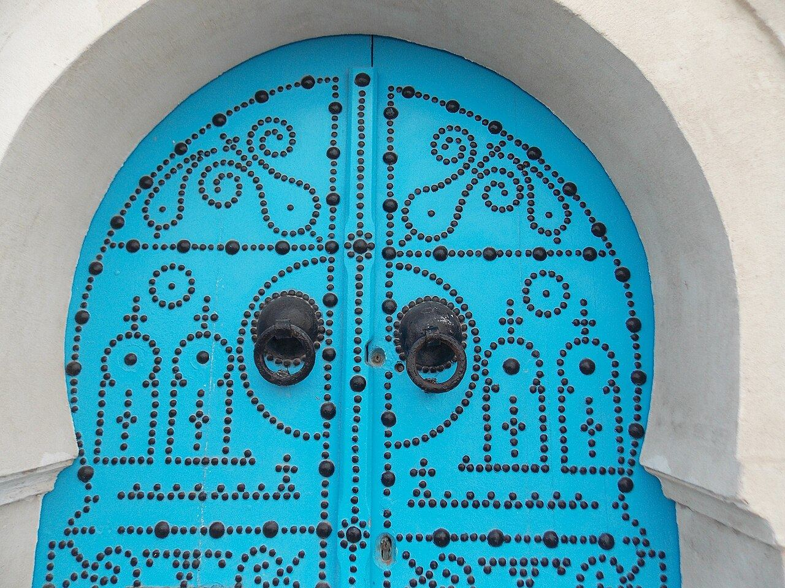
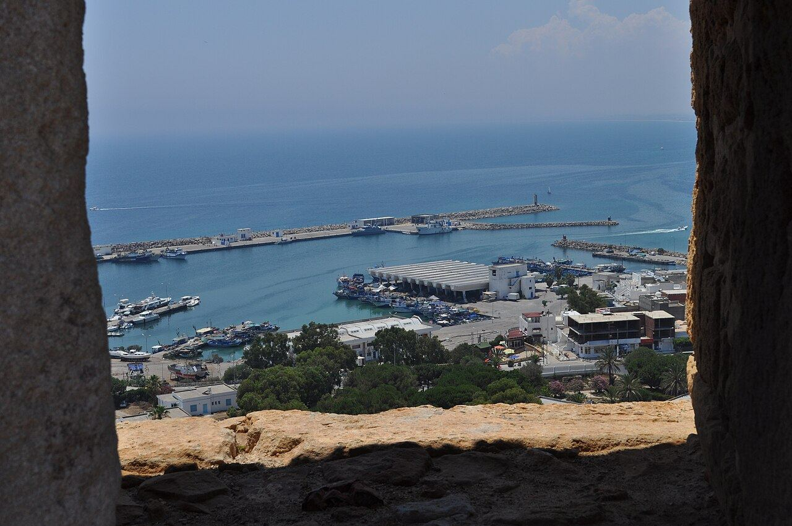
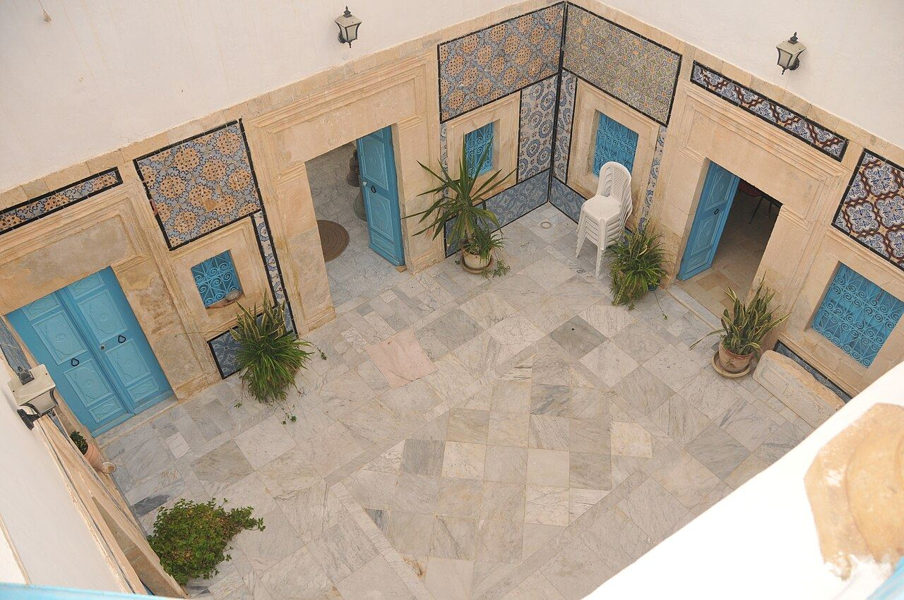
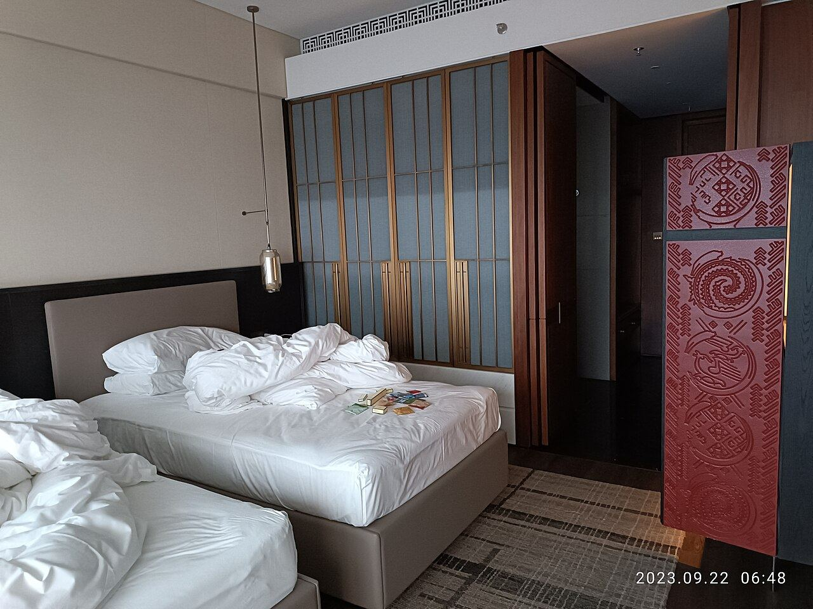
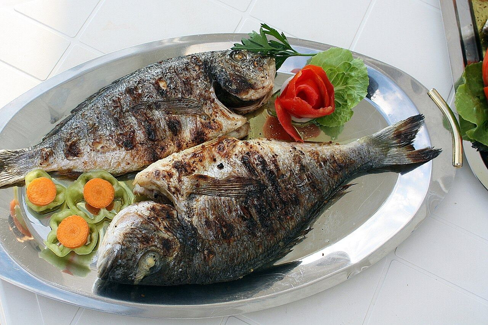

Suite classique (×6)
2 chambres séparées avec lits doubles, réfrigérateur, salle de douche et WC.
à partir de170 DT à confirmer

Une demeure familiale typiquement tunisienne en bord de mer : suites climatisées pour 4 personnes, patio à arcades et restaurant maison.
L'Hirondelle est une maison familiale tunisienne qui propose des suites à louer en bord de mer, à Aïn Grenz.
Les hébergements sont à l'étage, desservis par une entrée indépendante et un joli patio avec arcades. Au rez-de-chaussée, le restaurant accueille petits-déjeuners et repas.

Toutes climatisées, sans cuisine. Tarif par suite et par nuitée (max 4 personnes), hors repas.

2 chambres séparées avec lits doubles, réfrigérateur, salle de douche et WC.

2 chambres doubles, grand salon TV privé avec balcon, salle de bain avec baignoire.
Photos d'ambiance sous licence libre (non contractuelles) — à remplacer par vos propres photos.
Plages d'Aïn Grenz.
Repas sur réservation.
Dès 13 DT, sur réservation à confirmer
Dans toutes les suites.
Liberté totale.
2 chambres par suite.
Réponse en FR/EN/IT assistant option
Fort, port, plages de Mansoura.

Petits-déjeuners et repas servis sur place, pour les hôtes de la maison comme pour les gourmands de passage.
Exemple de carte : à remplacer par votre menu réel. Menu QR et commande WhatsApp activables.
Port de pêche, fort et cuisine de la mer. Photos d'ambiance — à remplacer par vos photos et vos plats
Envoyez votre demande en 1 minute : la maison vous répond sur WhatsApp avec la disponibilité et le tarif.
Avenue de l'Environnement, quartier d'Aïn Grenz, à Kélibia. Environ 1h45 de Tunis.